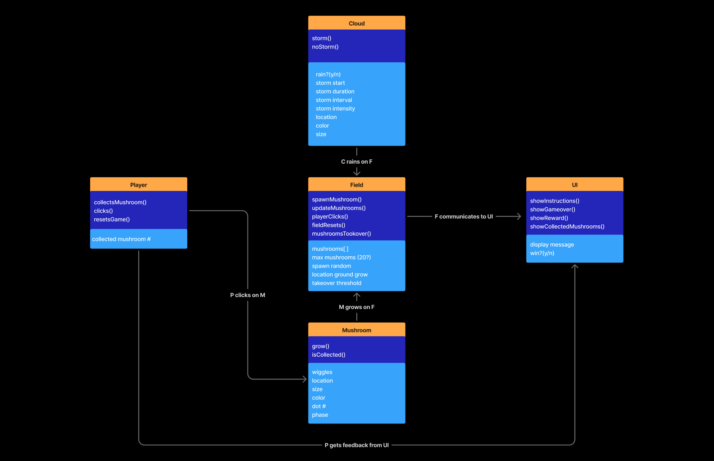
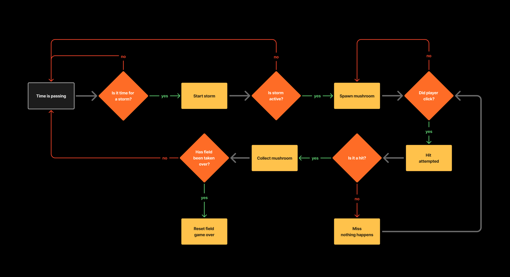

✨🍄 Collect the Mushrooms! 🍄✨
Idea: After a long rainy week, mushrooms began appearing all over my neighborhood. They randomly popped up in lawns, hiding along sidewalks, and growing out of the most random nooks & crannies. I was inspired and turned it into a playful system where a storm cloud roll in and mushrooms sprout up across the field. The player must collect enough mushrooms or they will take over the field.
UML Systems Diagram

Behavioral Flow Chart

Core Steps + Challenges
1) Mapping the system
I first mapped out the cloud, field, mushrooms, player, and UI as separate objects & actors.
2) Building the environment with an Object-Oriented Programming framework
I wanted each mushroom object to have its own unique color, size, behavior, and hit detection radius, while the Field would manage the mushrooms collectively. A maximum value threshold would signal if the mushrooms overtook the field.
3) Adding interaction & UI game play
The player clicks to collect newly spawned mushrooms between random rain intervals (with rain representing an emerging environmental property). To raise the stakes, they also need to make sure the mushrooms don't overtake the field, or they lose the game. If they collect 20 mushrooms, they're dubbed a pro mushrom forager and win the game.
4) Visual & UI polish
For a fun visual style that felt more natural, I added sine-wave animation in the rain lines, noise-driven mushroom sway. I added win/lose states at the end since it fel like a more rewarding experience for the player.
Key Learnings + Takeaways
- It took a combination of readings, tutorials, and hands-on practice/debugging & styling to understand how OOP worked. After absorbing the theory & organizational purpose behind using classes, instanced objects, and global vs. constructor & draw values, it made smaller adjustments easier to scale and adjust towards the end. Made all that work worth it!
- I had a lot of fun playing with the time values to get the randomness and squash and stretch of the mushrooms to feel "just right". It was rewarding to get a natural-feeling and organic animation.
- I spend a good amount of time debugging and updating the UI messaging. I got a better understanding of where to align different UI messages & displays, added a "Collected" counter, and created true/false conditions for when the player either won or lost.
- It was fun to come up with a game from a real-life observation, and combine it with my love of animation.